The HuggingFace inference pipeline can be generalized as a sequence of clearly defined
transformations. The process starts with raw text, a plain string such as “This course is
amazing.” The tokenizer takes this string, splits it into subword units, and looks
up each unit in a fixed vocabulary table. This step produces a sequence of integers called
input IDs, which is the form the model can consume. The model then takes
these input IDs and computes a real-valued score for each possible label; these scores are called
logits and encode how compatible the text is with each class before any normalization.
The final post-processing block converts logits into something usable: a softmax
turns them into probabilities, and simple decision logic (such as taking the largest probability)
chooses the predicted label, for example POSITIVE versus NEGATIVE sentiment.
Transformer Architecture & DeepFloyd IF
The internal structure of the model can be decomposed into an embedding layer, a stack of
transformer layers, and a classification head. First, an embedding layer maps each
input ID to a dense vector that represents the token in a continuous space. A stack of
transformer layers then processes the entire sequence: each layer applies
self-attention, so every token can use information from every other token, followed by small
feed-forward networks that refine these combined representations. After several such layers, the
model extracts a single summary vector for the whole sequence (for example, by reading a special
classification token or averaging all token vectors). A small classification head,
typically one or two linear layers, takes this summary vector and produces the logits. These logits
feed directly into the post-processing step from the first paragraph, completing the logical chain
from raw text to final prediction.
DeepFloyd IF can be understood as coupling this text encoder to a three-stage cascaded diffusion
model: a 64×64 base denoiser (stage 1) followed by two upsamplers that refine the image to higher
resolutions (stages 2 and 3). For all experiments in this section, prompt embeddings produced by
the transformer are used as conditioning signals at every denoising step, while the random seed is
fixed to 12152000 so that differences in the outputs primarily reflect the prompts and sampling
hyperparameters. Classifier-free guidance is applied with a relatively strong guidance scale in
stage 1 (γ ≈ 9.0) and slightly lower guidance in the upsampling stages (γ ≈ 7.0), which stabilizes
global structure while allowing the higher-resolution stages to sharpen details. This setup
provides a controlled environment for the prompt-based images that follow, making it possible to
interpret how changes in text descriptions translate into systematic changes in composition,
lighting, and reflective structure.
DeepFloyd Prompts
The prompt study evaluates how faithfully DeepFloyd IF translates
language into images, rather than simply demonstrating that it can produce visually pleasing
samples. A small bank of prompts is first encoded with the HuggingFace text encoder to obtain a
fixed set of embeddings that are reused throughout the project. From this bank, several prompts
are chosen as exemplars and are displayed side by side with their generated images, using a
single random seed and multiple values of num_inference_steps.
Prompt outputs
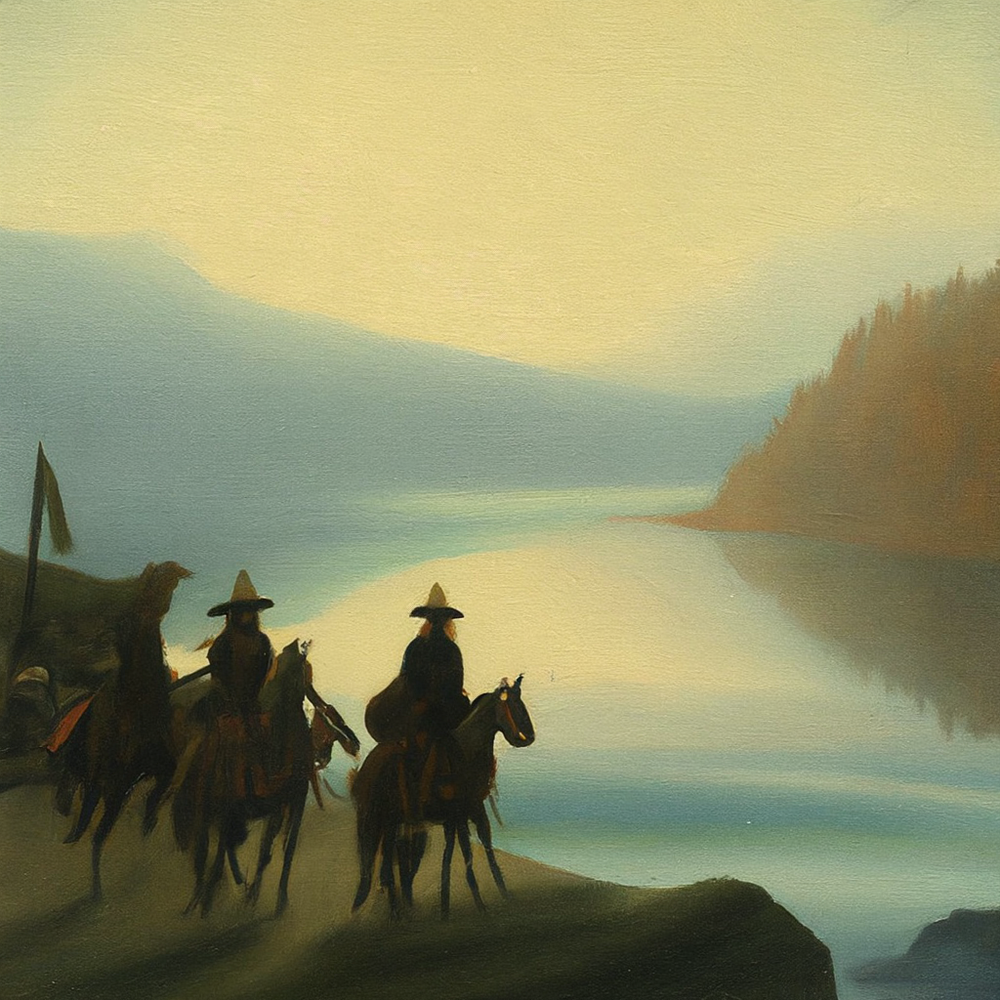
"a symbolist painting of Lewis and Clark reaching the Columbia River, soft edges"
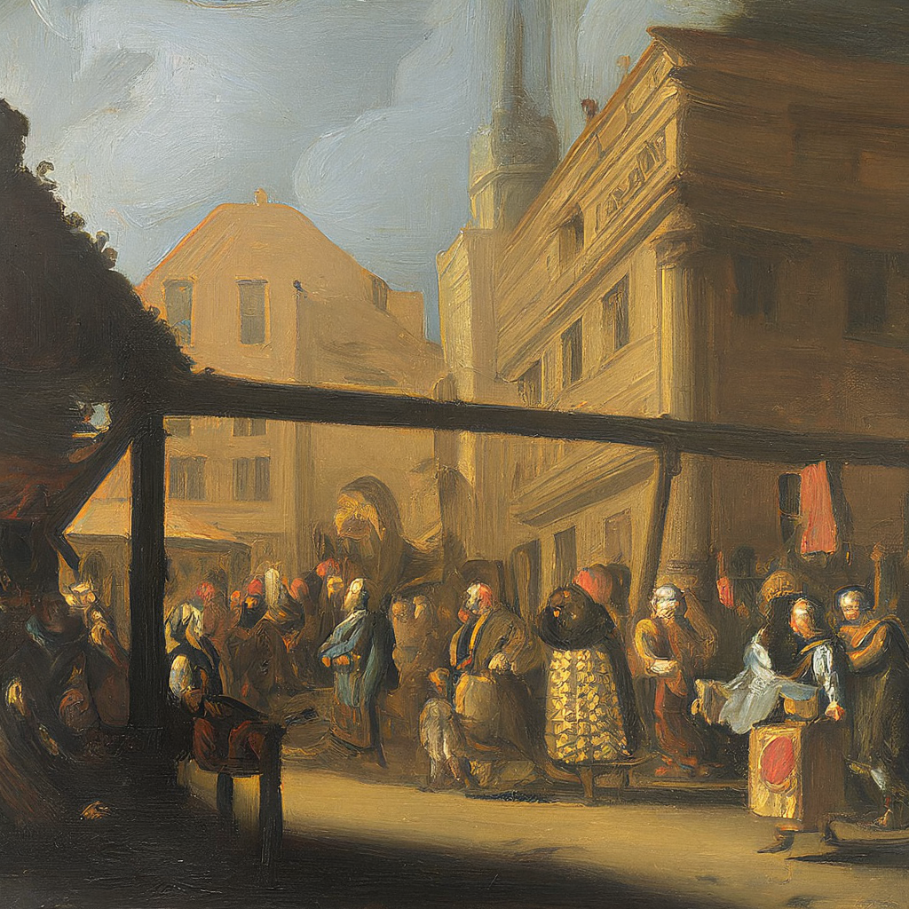
"a baroque oil painting of a crowded market lit by torches and deep shadows"
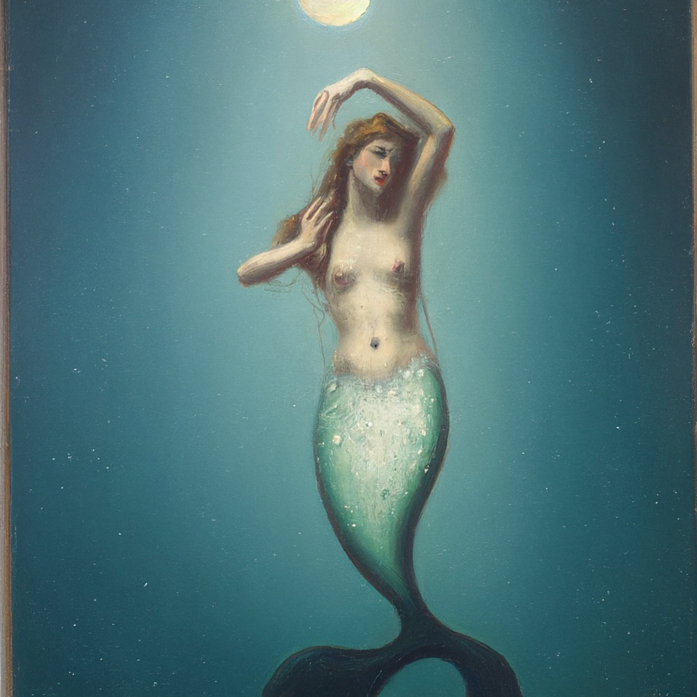
"a romanticism oil painting of a mermaid seen only as a reflection in dark waves under moonlight"
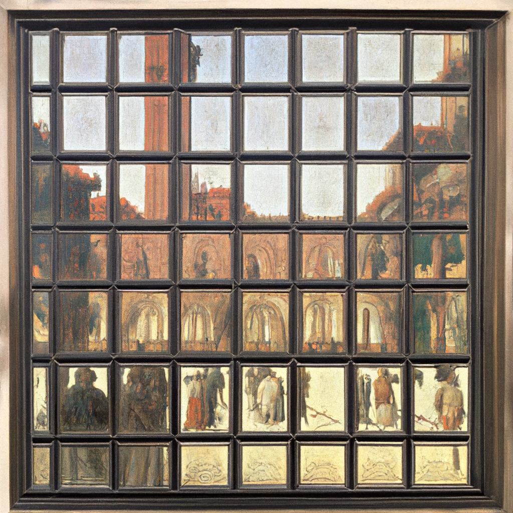
"a renaissance-style painting of a city square reflected in many small glass panes"
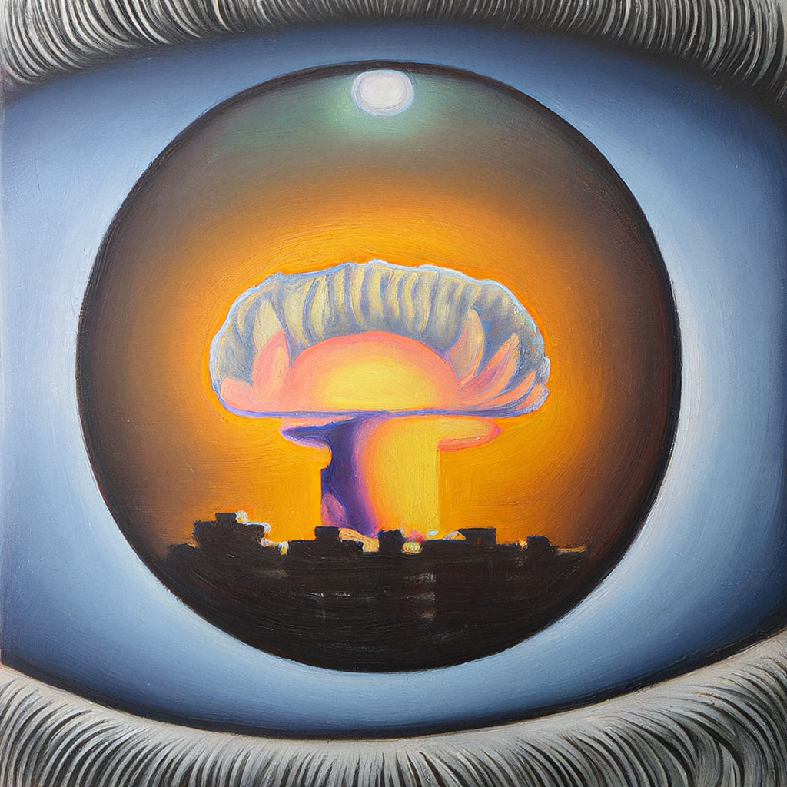
"an oil painting, close-up of a villager's eye with a distant mushroom cloud reflected in the iris"
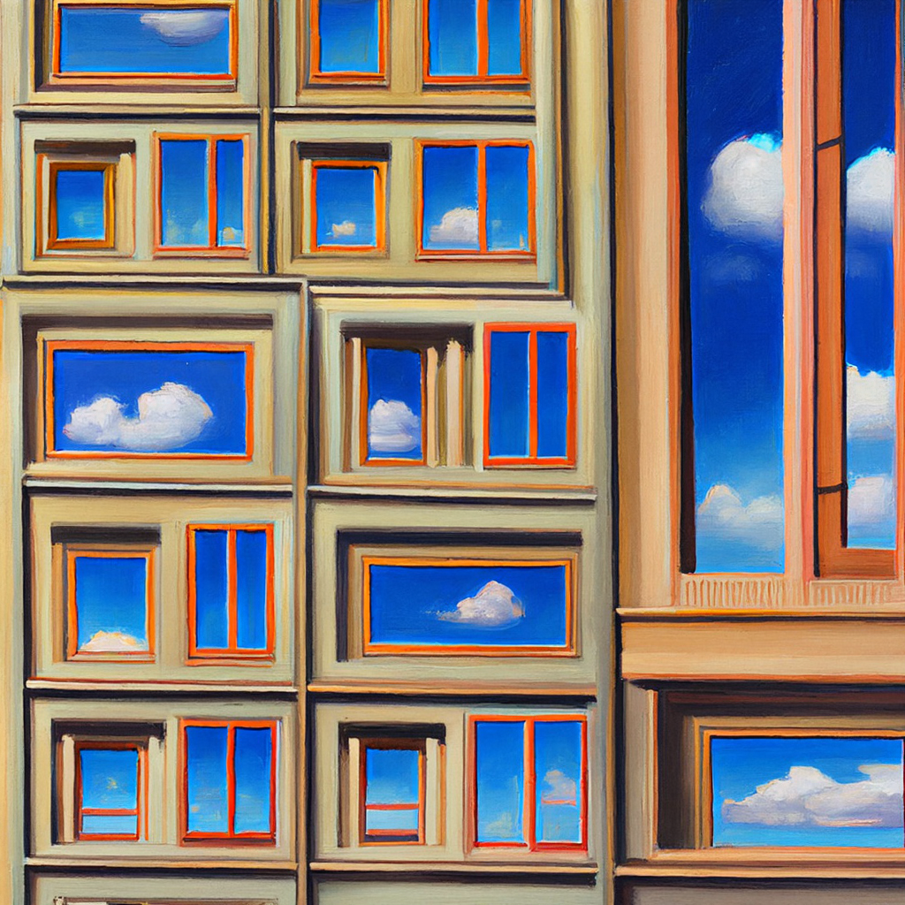
"a realism painting of a library where each window opens onto a different sky"
The first row shows that DeepFloyd IF consistently respects broad scene type and global
composition: crowded interiors, reflective windows, and symbolic iris structures all align
closely with their prompts, even when fine relational details are only partially enforced.
The second row then isolates the effect of the number of sampling steps in the stage 1
base model. With only 10 steps, the iris image has roughly correct layout but incorrect anatomy of the eyelid
and relatively coarse shading; at 25–50 steps, edges around the iris and eyelids sharpen and
the reflected landscape stabilizes. Increasing to 75–125 steps yields smoother gradients and
more precise highlights on the cornea, indicating that the sampler is projecting the sample
closer to the natural image manifold. Around 150 steps there are only modest improvements, and
once the step count is pushed beyond roughly 200, structure begins to break down: the iris and
eyelids dissolve into over-textured patterns and, in the most extreme cases, stage 1
produces almost pure noise. At that point stages 2 and 3 simply upscale whatever is
present, leading to hallucinated detail or noise at higher resolutions rather than recovering
the intended eye.
1.1 Forward Process
The forward diffusion process is implemented as a function forward(im, t) that maps a
clean 64×64 Campanile image to a noisy version at timestep t. At each timestep, the
function adds Gaussian noise with variance prescribed by the fixed noise schedule, so that larger
values of t correspond to stronger corruption. This defines a monotonic path from the
data distribution toward an isotropic Gaussian, which is the starting point for the reverse
denoising process in later parts of the project.
Timesteps
t = 0
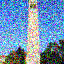
t = 250t = 500t = 750
To visualize this behavior, the Campanile is shown at several representative timesteps:
t = 0, 250, 500, and 750.
At t = 0, the image is the original, noise-free photograph. By t = 250,
moderate noise is visible, but the tower, trees, and sky remain clearly recognizable. At
t = 500, the injected noise dominates fine detail: edges
blur, colors fluctuate more erratically, and the Campanile is reduced to a faint silhouette. By
t = 750, the sample is visually indistinguishable from pure noise, with only faint
trace of the original structure.
1.2 Classical Denoising
Classical denoising here is instantiated by a simple Gaussian blur applied directly to the noisy
Campanile images from the forward process. For each noise level (t = 0, 250, 500, 750), the noisy
image is filtered with a fixed-radius Gaussian kernel, which suppresses high-frequency variations
but does not use any knowledge of the underlying data distribution. This produces a purely
low-pass baseline that can be compared against the diffusion-based denoisers in later parts of the
project.
Timesteps
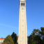
t = 0
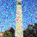
t = 250t = 500t = 750
The sequence of results highlights both the strengths and limitations of this approach. At low
noise levels (t = 0 and t = 250), Gaussian denoising successfully reduces speckle in the sky and
façade while preserving the overall silhouette of the tower and trees, although fine edges become
noticeably softened. At higher noise levels (t = 500 and especially t = 750), the blur removes some
of the colorful grain but also smears out important structure, leaving a hazy, almost watercolor
version of the scene in which architectural details and tree textures are largely lost. This
behavior illustrates why classical smoothing is a useful but ultimately insufficient baseline:
it can attenuate noise, but without a learned prior it cannot reconstruct missing high-frequency
detail once the forward process has heavily corrupted the image.
1.3 One-Step Denoising
One-step denoising evaluates how much structure can be recovered from a noisy observation using
a single reverse diffusion step. For each timestep t in {250, 500, 750}, the forward
process is first used to corrupt the clean 64×64 Campanile image and obtain a noisy input. This
noisy image is then passed through stage_1.unet to estimate the noise component,
and a one-step reconstruction is formed by subtracting the predicted noise from the noisy input.
The resulting estimate can be compared directly against the original image and the noisy
observation to assess how well a single denoising step in the learned model inverts the forward
process at different noise levels.
Noisy input
t = 0
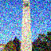
t = 250t = 500t = 750
One-step denoised estimate
t = 0t = 250t = 500t = 750
As the noise level increases, the one-step reconstructions retain the coarse outline of the
Campanile but lose fine detail and contrast, highlighting the limitations of a single reverse
step and motivating the iterative denoising scheme developed in the next section.
1.4 Iterative Denoising
Iterative denoising generalizes the one-step procedure by applying the learned noise predictor
across a full schedule of reverse diffusion steps. Starting from a heavily noised Campanile
image at an initial index i_start = 10, a strided list of timesteps is constructed
(from 990 down to 0 in steps of 30), and at each timestep the UNet estimates the noise and
performs a small update toward the clean image. This produces a sequence of intermediate
reconstructions that progressively recover large-scale structure and fine detail, rather than
attempting to undo all of the corruption in a single jump.
Iterative denoising trajectory
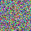
early stepsmidway (1)
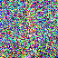
midway (2)late stepsaggressive schedule
Final reconstructions
Original CampanileIterative denoisingOne-step denoisingGaussian baseline
The GIFs in the first row show the Campanile image gradually emerging from near-pure noise:
early frames retain little structure, mid-sequence frames recover the tower silhouette and sky
gradient, and late frames sharpen edges and contrast. The second row compares the final
iterative reconstruction against the original image, the one-step estimate, and the classical
Gaussian baseline. Iterative denoising produces the closest match to the original: the tower
and trees are well defined and textures are plausibly restored. The one-step estimate recovers
only coarse shape and remains noticeably washed out, while the Gaussian result is over-smoothed
and lacks architectural detail. It's evident that repeatedly applying the learned reverse step along
a carefully chosen schedule is essential for high-quality reconstructions in diffusion models.
1.5 Diffusion Model Sampling
Diffusion model sampling reverses the forward corruption process by starting from pure Gaussian
noise and applying the learned denoising model along the full schedule of timesteps. For this
part, the stage 1 sampler is run five times with different random seeds
(32168, 100570, 91798, 1215, 122607). Each run draws an independent noise image at the final
timestep and then traverses the entire reverse chain, producing one synthesized 64×64 image per
seed. Model weights, scheduler settings, and all hyperparameters are held fixed; only the
initial noise realization changes.
The five samples exhibit diverse scene types and compositions, ranging from landscapes
to portraits despite being generated by the same model and schedule. This diversity arises solely from the
different
random seeds, which determine the initial noise pattern at the start of the reverse process.
At the same time, all images share consistent photographic qualities such as coherent lighting,
natural textures, and plausible perspective, indicating that the model has learned a strong
prior over natural images rather than memorizing individual examples.
1.6 Classifier-Free Guidance (CFG)
Classifier-free guidance modifies the sampling process by interpolating between unconditional
and text-conditioned predictions from the UNet. At each reverse step, the model is run twice:
once with the prompt dropped (unconditional) and once with the prompt “a high quality photo.”
The final noise estimate is obtained by adding a scaled difference between these two outputs,
controlled by a guidance scale w. Small values of w keep the samples close to
the unconditional image distribution and emphasize diversity, whereas large values force the
generation to adhere more strongly to the prompt, at the risk of oversharpening or introducing
artifacts. In this section, five images are generated with a fixed random seed and guidance
scales {2, 4, 5, 6, 8}.
Samples with varying CFG scales
CFG scale 2 – soft, low-contrast portrait
CFG scale 4 – high-contrast landscape at dusk
CFG scale 5 – more defined monochrome portrait
CFG scale 6 – vivid close-up portrait
CFG scale 8 – very sharp, strongly conditioned portrait
As the CFG scale increases, the samples move from soft, low-contrast renderings toward images
with sharper edges, stronger color saturation. At low guidance
(e.g., scale 2), the model behaves similarly to the unconditional sampler: compositions are
plausible but loosely tied to the prompt. Intermediate scales (around 4–6) balance fidelity and
realism, producing images that read clearly as high-quality photographs without obvious
artifacts. At the highest scale (8), the model adheres very strongly to the prompt, which
enhances detail but can also exaggerate contrast and make textures look slightly artificial.
This progression illustrates the core trade-off of classifier-free guidance: stronger guidance
improves prompt alignment but gradually reduces diversity and can push samples away from the
natural image manifold if set too high.
1.7 Image-to-image Translation (SDEdit)
Image-to-image translation in this part is implemented using the SDEdit procedure. Instead of
sampling from pure noise, the algorithm begins from a real 64×64 photograph of the Campanile,
runs the forward diffusion process up to a chosen noise index i_start, and then applies
the usual reverse sampler conditioned on the prompt “a high quality photo.” For small values of
i_start, the starting point is only mildly corrupted and the sampler behaves like a
noise-removal-and-retouch operator; larger values push the image closer to pure noise before
denoising, giving the model more freedom to reinterpret the scene while still being guided by
the original structure.
Across all three examples, the SDEdit trajectory shows a consistent pattern. For the Campanile,
low noise levels preserve the tower and horizion line almost exactly, while higher levels introduce
softer clouds, altered color grading, and occasionally new structural details. My first personal image is of a
glass
sculpture which begins as a dense cluster of orange spikes and, under increasing noise, is redrawn
as more diffuse, branching forms that still respect the radial “explosion” motif but explore
new lighting and background colors. The thrid sequence similarly moves from a faithful
reconstruction of the original scultupre to more stylized versions where the artwwork, colors, and background
are exaggerated or partially reimagined as flowers and landscapes. And so, SDEdit can either gently refine an
existing photograph or drive it toward a more creative,
prompt-driven reinterpretation, depending on how far along the forward diffusion trajectory
the sampler chooses to re-enter.
1.7.1 Editing Web and Hand-Drawn Images
This section tests SDEdit on images that originate from outside sources varying the initial starting step. For
each input, the forward process is run to noise levels i_start ∈ {1, 3, 5, 7, 10, 20},
and the reverse sampler is then applied under the prompt “a high quality photo.” At low noise
levels, the procedure behaves like a local enhancement operator that cleans and stylizes the
input while preserving its structure; at high noise levels, the model is forced to hallucinate
more content from its learned prior while still being anchored by the original image.
One special image is the viral photograph of “The Dress,” perceived by some as white and gold (me)
and by others as blue and black (surely lies). The other two inputs are hand-drawn doodles.
The Dress row probes how the model resolves ambiguous
illumination and just like us, the sampler flips between “warm background, white dress”
and “cool background, blue dress,” and its choice depends on how much noise we inject before
denoising.
For The Dress, low i_start values mostly clean compression artifacts and keep a warm cast,
so the dress reads as white–gold. As the noise level increases and the corrupted input loses
reliable color cues, the reconstructions flip between warmer yellowish versions and cooler
blue-toned ones. In the region where the dress itself lives, the sequence gradually leans toward a
blue-and-black interpretation, while the background drifts toward brighter white and gold. This
mirrors one popular explanation of the illusion!!!! Different assumptions about scene lighting lead to
two equally stable color stories, and different re-entry points into the reverse diffusion chain
simply pick different stories.
The doodles show the same mechanism at work when the geometry is also ambiguous. For The Blue
Bandit, small i_start values keep the rough mask outline and pose while turning marker
strokes into smooth skin, hair, and background shading; larger values redraw the figure with more
realistic proportions and textures that still follow the original silhouette.
In the last sketch, the
horizontal bar and bright disk are repeatedly reused but assigned new semantic roles: a bench and
two people at low noise, then a surfer on a wave, snow-covered rocks at sunrise, and finally a
tightly cropped view of a striped dress. One trajectory even passes through a flat yellow sign that
literally reads “HIGH QUALITY PHOTO,” because the sampler is conditioned on that exact phrase, and
drawing the words is one very literal way to satisfy it. As i_start increases, control
shifts from the original pixels to the model’s natural-image prior, so the edits move from cleaned-up
versions of the inputs to qualitatively new photographs that only loosely preserve the original
layout and color scheme.
1.7.2 Inpainting
Inpainting focuses on editing only a specified region of the image while preserving the
surrounding context. The 64×64 Campanile photograph is paired with a binary mask that marks
the section of the tower to be regenerated. Inside the mask, the image is diffused forward to
noise levels i_start ∈ {1, 2, 3, 4, 5, 7}, while pixels outside the mask remain fixed.
The reverse sampler, conditioned on “a high quality photo,” then reconstructs the masked region
so that it blends seamlessly with the unchanged background. The images below show the input,
mask, and inpainting trajectories for different noise entry points.
Inpainting at different noise levels
Original inputMask (edited region)noise level 1noise level 2noise level 3noise level 4noise level 5noise level 7Final inpainted result
The original image and mask at the beginning of the belt clarify which portion of the tower is
being regenerated. For the lowest noise levels, the inpainted region remains very close to the
original structure: the tower edges align across the mask boundary, and only subtle texture and
lighting changes appear. As i_start increases, the tower interior and base are redrawn
with more variation, and the model begins to hallucinate new details while still matching the
surrounding sky and trees in color and shading.
The end result demonstrates that
the diffusion model can fill in a missing region with a plausible, high-quality reconstruction
that respects both the global geometry of the scene and the local context provided by the
unmasked pixels.
This part extends SDEdit by replacing the generic prompt “a high quality photo” with richer
text descriptions. For each input image, the forward process is run to noise levels
i_start ∈ {1, 3, 5, 7, 10, 20}, and the reverse sampler is guided by a specific prompt.
The Campanile image is edited with the prompt “a rocketship launching into space,” while two
additional images are edited with Renaissance-style prompts: “a Renaissance painting of a
knight and a dragon” and “a Renaissance painting of a celestial choir of angels.”
Campanile – prompt: “a rocketship launching into space”
Increasing the noise level before denoising systematically trades fidelity to the original pixels
for stronger alignment with the text prompt. For the Campanile, low noise levels simply add
rocket-like exhaust and faint sky streaks to the existing tower, while higher levels let the model
bend the silhouette and sky into a clear launch scene. Under the knight-and-dragon prompt, fine
photographic detail is gradually overwritten by painterly armor, banners, and dragon forms, until
at the highest noise levels the image reads almost entirely as a Renaissance illustration. The
celestial-choir prompt shows a similar pattern: mild noise yields subtle halos and robes layered
over the original figures, whereas strong noise produces densely populated, golden-toned scenes
with increasingly distorted anatomy. Varying the noise-level parameter thus allows SDEdit to
interpolate between gentle stylistic editing and full semantic reinterpretation while remaining
anchored to the structure implied by the prompts.
1.8 Visual Anagrams
Visual anagrams are constructed by coupling the diffusion model with two different text prompts
and a 180° flip operation. The procedure starts from a noisy 64×64 image and alternates between
two denoising passes: one conditioned on the “upright” prompt and one conditioned on the
“flipped” prompt, where the image is rotated by 180° before the second pass. The two predicted
noise fields are rotated into a common orientation and averaged, and this averaged estimate is
used for the reverse diffusion update. Repeating this through the whole schedule yields an
image that is simultaneously compatible with both prompts, but with each one dominating in a
different orientation.
Upright vs. flipped interpretations
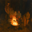
Upright: “an oil painting of people around a campfire”
Flipped: “an oil painting of an old man”
Upright: “a baroque painting of Cleopatra as a newborn princess
in a tall palace hall”
Flipped: “a baroque painting of Cleopatra as a dying queen in the same hall”
Flipped: “a romanticism painting of the storming of the Bastille”
Upright: “a neoclassical painting of the signing of the United States
Declaration of Independence”
The Cleopatra anagram uses the symmetry of the palace architecture and drapery to encode two temporal states of
the
same character—birth and death—in a single canvas, with the vertical axes of the columns and
stairs serving both compositions. The final pair blends two historical scenes into one:
in one orientation, the flags, torches, and crowd read as the storming of the Bastille,
whereas in the other orientation the same shapes align into the orderly assembly and banners
of the U.S. Declaration’s signing. Diffusion models not only produce standalone images but
can be steered to produce images that occupy the intersection of two distinct textual
descriptions, with rotation acting as the switch that selects which interpretation dominates.
1.9 Hybrid Images
Hybrid images are constructed by combining the low-frequency content of one image with the
high-frequency detail of another. In this part, two prompts are sampled separately, then split
into “blurred” and “detail” components using Gaussian smoothing and a corresponding
high-pass residual. The final hybrid is obtained by adding the low frequencies of the first
image to the high frequencies of the second. When viewed up close, the eye is drawn to the
high-frequency structure and the hybrid resembles the second prompt; when viewed from farther
away or at a reduced resolution, the low-frequency structure dominates and the first prompt
becomes more apparent.
Hybrids across spatial frequency scales
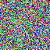
“a lithograph of a skull” / “a lithograph of a waterfall” – up close the skull’s eye
sockets and teeth dominate, while from a distance the smooth cascades and vertical bands
read as a waterfall.
“a lithograph of a king” / “a lithograph of a volcano” – at high resolution the crown,
facial features, and cloak outlines identify the king; as the image is shrunk or viewed
from afar, the same contours merge into the cone, crater, and plume of a volcanic scene.
“a young woman reading near a candlelight” / “a gothic cathedral” – nearby, the hybrid
looks like a softly lit portrait, with facial details and hair strands defined by the
high-frequency component; at a distance, the arches, windows, and vertical buttresses of a
cathedral emerge from the low-frequency structure.
Across all three examples, the GIFs make the frequency trade-off explicit. Early frames emphasize
heavily blurred bases in which only coarse silhouettes from the first prompt are visible, while
later frames sharpen edges, textures, and small-scale contrast contributed by the second prompt.
The resulting static hybrids therefore encode two distinct descriptions in a single image, with
the perceived interpretation shifting smoothly as the viewing distance or display scale changes.